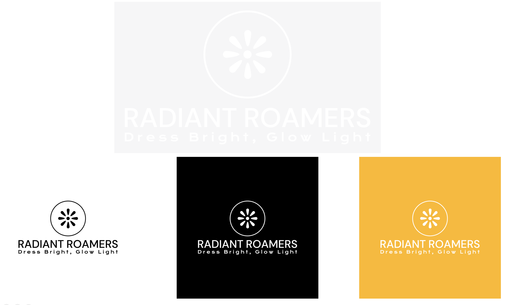
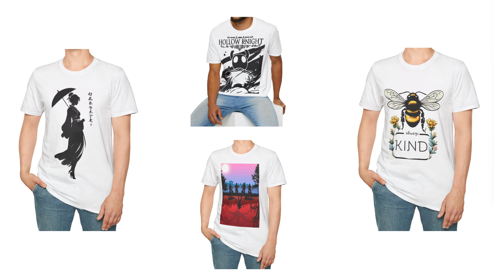
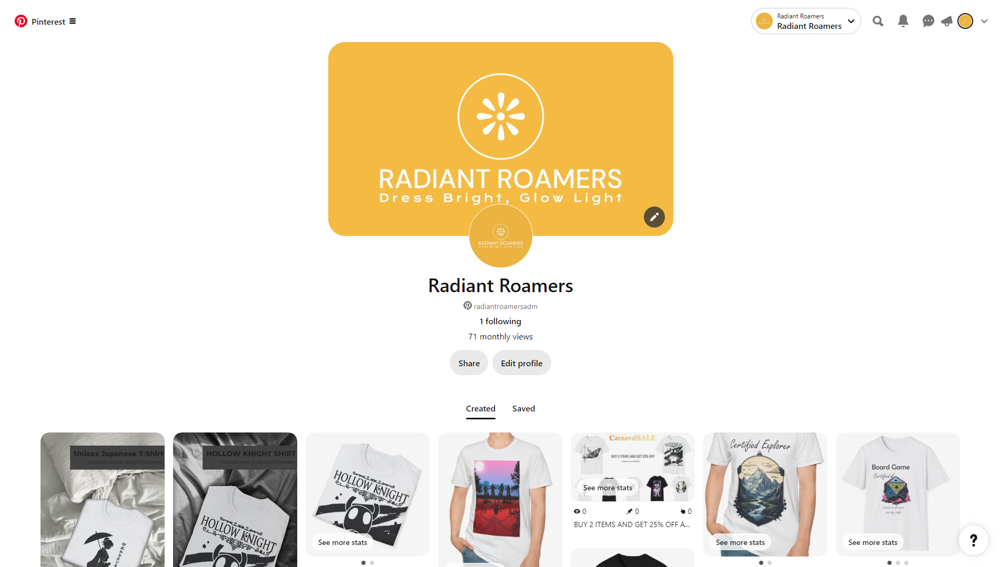

This is just a blog about my experience when I decided making an online Etsy shop.
Here it is, RadiantRoamers!
To build this shop, first I had to come up with a brand, I already knew I wanted to sell shirts, also I knew that white shirts are more aesthetic and probably sell more, I came up with the RadiantRoamers because I wanted to mention Radiance wich is the name of a boss in my favourite game "Hollow Knigh" then I just added Roamers to give an idea of movement to lighten the brand even more.
On the brand design I decided to use more of a streamline font and yellow and white when possible.
Here are some of the designs, I decided to not re-invent the wheel and go with known designs from famous media.
I also advertised on pinterest which is the way most people visit my website.
